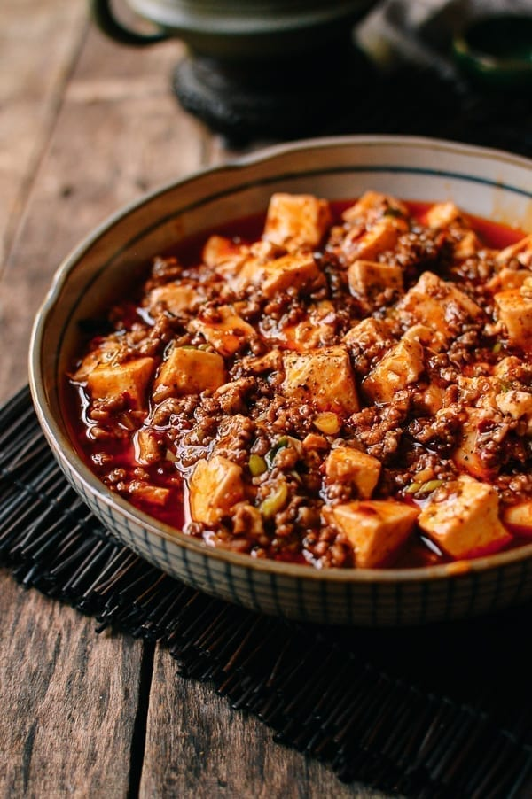

Mapo Tofu

Description
Create the perfectMapo Tofu with these steps
Ingredients
- ½ cup oil
- 1-2 fresh Thai bird chili peppers
- 6-8 dried red chilies
- 1/2- 1 1/2 tablespoons Sichuan peppercorns
- 3 tablespoons ginger
- 3 tablespoons garlic
- 8 ounces ground pork
- 1-2 tablespoons spicy bean sauce
- 2/3 cup low sodium chicken broth
- 1 pound silken tofu
- 1 1/2 teaspoons cornstarch
- 1/4 teaspoon sesame oil
- 1/4 teaspoon sugar
- 1 scallion
Steps
Notes: It will be SPICY.
- Toast the chilies. Heat your wok or a small saucepan over low heat. Add ¼ cup of the oil and throw in the fresh and dried peppers. Stir occasionally and heat until fragrant, about 5 minutes, ensuring that the peppers don’t burn. Remove from heat and set aside.
- Stir fry the spices. Heat the remaining ¼ cup of oil in your wok over medium heat. Add the ginger. After 1 minute, add the garlic. Fry for another minute, and then turn up the heat to high and add the ground pork. Break up the meat and fry it until it’s cooked through. Add your ground Sichuan peppercorns and stir for about 15-30 seconds, taking care to not let it burn, as it will turn bitter if it does.
- Add the sauce. Add the spicy bean sauce to the mixture and stir it in well. Add ⅔ cups of chicken broth to the wok and stir. Let this simmer for a minute or so. While that's happening, ready your tofu and also put a ¼ cup of water in a small bowl with your cornstarch and mix until thoroughly combined.
- Thicken the sauce. Add the cornstarch mixture to your sauce and stir. Let it bubble away until the sauce starts to thicken. (If it gets too thick, splash in a little more water or chicken stock.)
- Add the oil. Then add your chili oil from before—peppers and all! If you are using homemade chili oil, ONLY use the standing oil, as it's likely that you have salted it and you only want the oil, not additional salt. Stir the oil into the sauce, and add the tofu. Use your spatula to gently toss the tofu in the sauce. Let everything cook for 3-5 minutes. Add the sesame oil and sugar (if using) along with the scallions and stir until the scallions are just wilted.
- Enjoy. Serve with a last sprinkle of Sichuan peppercorn powder as a garnish if desired.